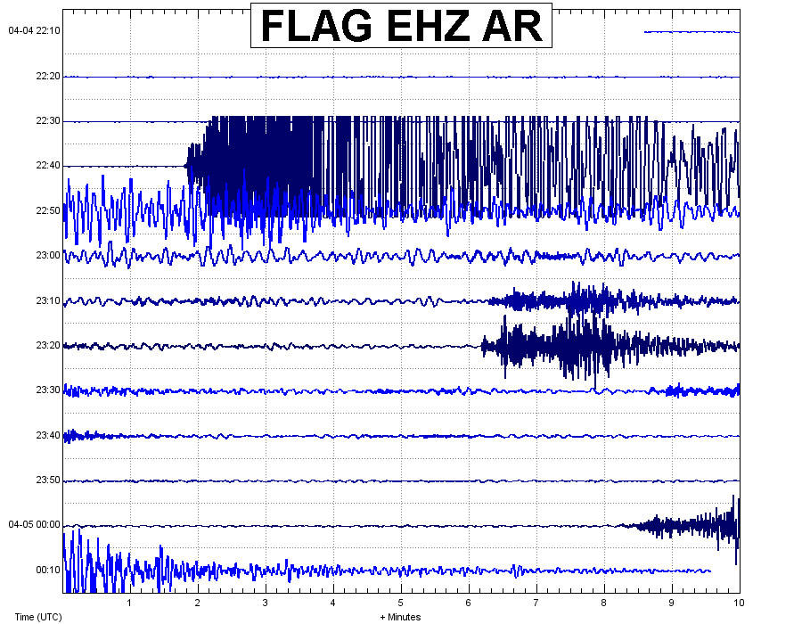

Easter Sunday, April 4, 2010
Magnitude 7.2 major earthquake in Baja Mexico
A major earthquake of magnitude 7.2 occurred on Sunday (Easter Day) April 4, 2010 at 22:40:41 UTC about 60 kilometers south of the US-Mexican boarder near Guadalupe Victoria in Baja California, Mexico. The earthquake occurred on a right-lateral transform fault at the boundary between the North American and Pacific tectonic plates at a depth of approximately 10 km. The USGS reports that at least 5 aftershocks of magnitude greater than 5.0 have occurred since 20:00:00 UTC on April 5, 2010. For more information on this earthquake please visit the USGS website by clicking here. To see data from the University of Arizona seismic station (TUC) please click here.
Baja Mexico is known to experience many major earthquakes in historic time. The most recent large event was the magnitude 6.9 Baja California earthquake on August 3, 2009, which was felt by residents of high-rise buildings in Phoenix, Arizona. The Easter 2010 earthquake was located approximately 500 km north-northwest of the 2009 event on the same tectonic plate boundary fault zone.
The Arizona Earthquake Information Center has received many felt reports from residents of Phoenix, Tucson, Prescott and Havasu City, Arizona, amongst other locations. Only moderate to light shaking was experienced in parts of Arizona. Many residents witnessed pools sloshing, light fixtures swaying and objects rattling. The P-wave arrived at the Flagstaff, Arizona (FLAG) seismic station at 22:41:47 UTC or at approximately 3:42 pm April 4th (MST). The initial P-waves took 1 minute 6 seconds to arrive in Flagstaff, as seen in the seismogram below.

The image above is the seismogram from the Flagstaff, Arizona (FLAG) seismic station. The Easter day 2010 Baja Mexico earthquake is seen at the top of the image with aftershocks seen arriving afterwards. Note that the seismic waves from the large magnitude 7.2 earthquake have been "clipped" when the energy from the earthquake exceeded the response capability of the seismometer.